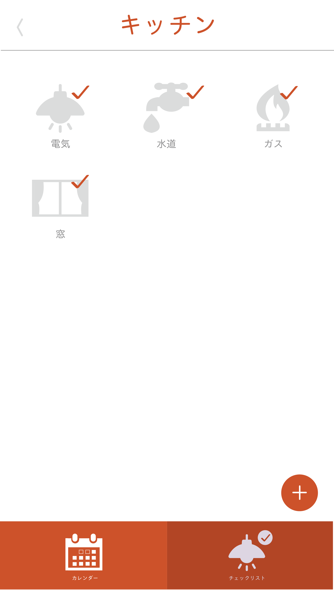
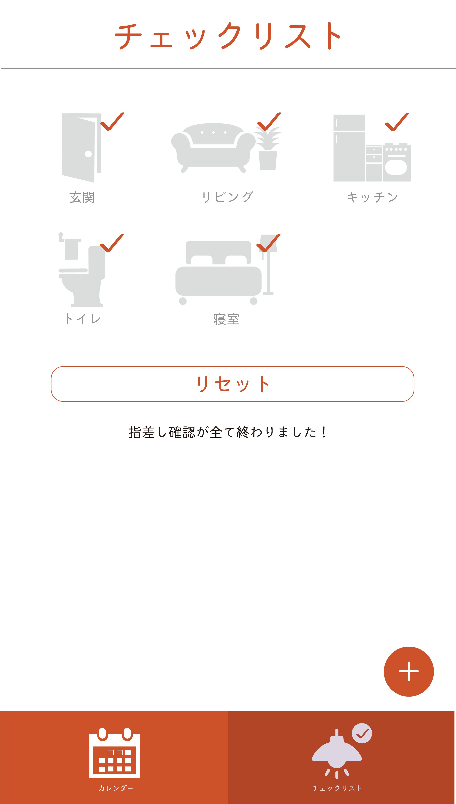

指差しチェッカー
2019.04-2019.06

担当：デザイン
技術：Illustrator/Photoshop/Xd
実習のグループ課題でSONYの”MESH”を使ってIoTアプリを制作しました。 私はアプリのデザインを担当し、ペルソナが高齢の方だったので、赤をメインカラーとした 見やすさ・理解性の高さに重点を置いたデザインを行いました。
指差しチェッカーは、指差し確認による認知症対策などの目的で作りました。 MESHを持ちながら部屋の電気、ガスなどを消したことを指差し確認し、MESHの加速度および人感センサーにより確認したということをアプリに送信します。
 指差し確認を完了すると上の画像のようにアイコンの表示が変わります。指差し確認をしたということはその機器や家具を消した/閉じたということなので色をグレーに、チェックしたということを示すためにチェックマークを追加しました。 また、部屋内の確認項目が全て終わった時、メイン画面であるチェックリスト内のアイコンも同様にグレーになります。 全ての項目が確認済みになると「指差し確認が全て終わりました」という表記を出すことで理解性を高めました。リセットボタンを押すと、アイコンに色がつき、チェックされていない状態に戻ります。
また、玄関の指差し確認が終わる（外出する）と、カレンダー、玄関で指差し確認をした時間が記録されます。このアプリを家族間などで共有することで、孤独死を防止することがカレンダー機能の目的です。
実装が間に合わなかった部分はXdでプロトタイプを作成し、アプリに対するイメージを掴みやすくしました。 グループでの制作は初めてでしたが、各々が得意分野を生かせることができるので、グループで制作することの良さを実感しました。